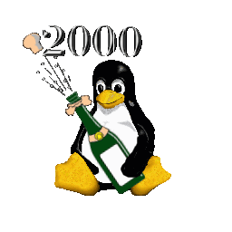

Bienvenidos al nuevo año. Mirando hacia 1999, quedamos sin respiración al
ver lo que ha conseguido Linux. Linux Weekly News ha publicado una
cronología de 1999:
Ha sido el año del núcleo 2.2, Gnome, un KDE muy estable, y también la
apertura al público de RedHat, Cobalt Networks, VA Linux y algunas otras
empresar relacionadas con Linux.
Tanto Gnome como KDE han cambiado profundamente la percepción de que Linux es una plataforma sólo para servidores, y las ofertas públicas han atraído mucha atención sobre Linux. Hace dos años, con frecuencia era necesario decir que era Linux. Ahora, de repente, todo el mundo parece haber oído algo sobre él.
El mercado de Linux está creciendo exponencialmente, y estamos bastante seguros de que este año será incluso más interesante que los anteriores. Pero, a pesar de esa expectación, necesitamos estar alerta. Una patente dura 20 años, y eso es mucho tiempo en el mundo del software. y precisamente en ese mundo más y más patentes son adjudicadas para cosas realmente simples. Estas patentes pueden estancar la innovacion e impedir el uso generalizado por un tiempo considerable. Las patentes sobre software son un problema especialmente importante para los desarrolladores de software libre, puesto que hacen casi imposible en la práctica implementar dichas ideas en forma de software libre. Richard Stallman ha hecho un llamamiento de boycot contra amazon.com. Al parecer, amazon está intentado usar su patente sobre el "one click order" para perjudicar a su competidor Barnes & Noble.
 Cómo particionar su disco duro para Linux
, por Thomas Mangin
Redes caseras, glosario y resumen
, por Guido Socher
Reciclando direcciones IP con Apache
, por Atif Ghaffar
VXE, una herramienta para la seguridad en Linux
, por Serge Lozovsky
FSViewer, un gestor de ficheros para WindowMaker
, por Georges Tarbouriech
WindowMaker (o NextStep) está de vuelta
, por Georges Tarbouriech
Perl (Parte III)
, por Guido Socher
Cómo particionar su disco duro para Linux
, por Thomas Mangin
Redes caseras, glosario y resumen
, por Guido Socher
Reciclando direcciones IP con Apache
, por Atif Ghaffar
VXE, una herramienta para la seguridad en Linux
, por Serge Lozovsky
FSViewer, un gestor de ficheros para WindowMaker
, por Georges Tarbouriech
WindowMaker (o NextStep) está de vuelta
, por Georges Tarbouriech
Perl (Parte III)
, por Guido SocherEl sistema de ficheros ext2 suele forzar una revisión del estado del mismo cada 20 montajes. Con el tamaño de las particiones actuales, dicha revisión puede durar varios minutos. Los ordernadores caseros suelen encenderse y apagarse con más frecuencia que los servidores, y como usuario regular te habrás encontrado varias veces el mensaje ... has reached maximum mount count, check forced
Revisar el estado del sistema de ficheros de vez en cuando es una buena idea, pero hacerlo una o dos veces por semana puede ser demasiado. Aquí contamos una forma de incrementar el número de montajes entre revisiones.
|
© 1999 LinuxFocus Página de contacto con LinuxFocus |